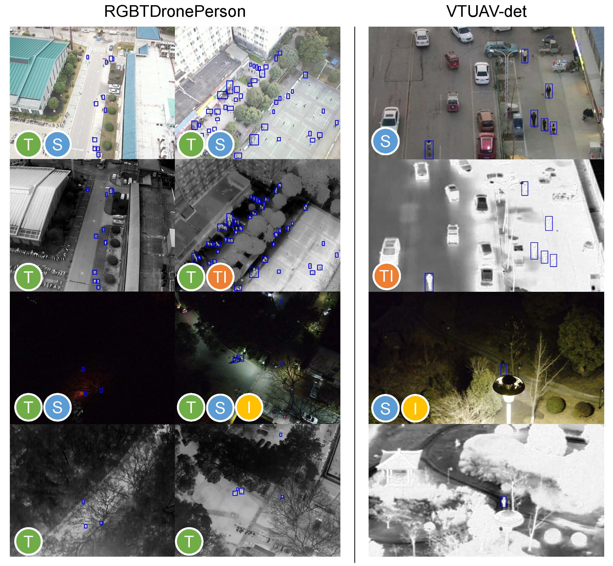
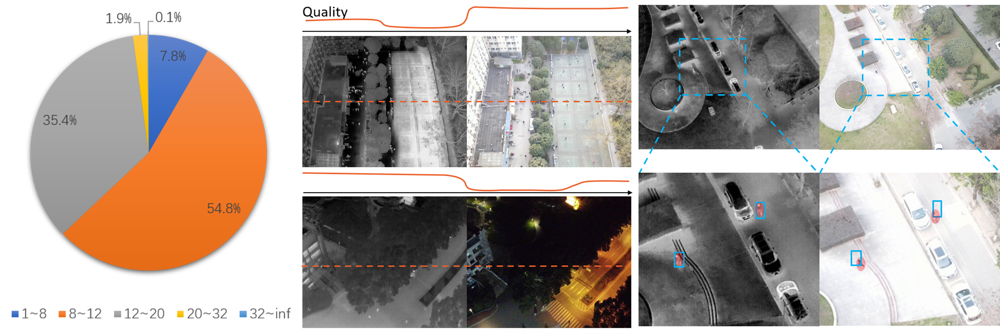
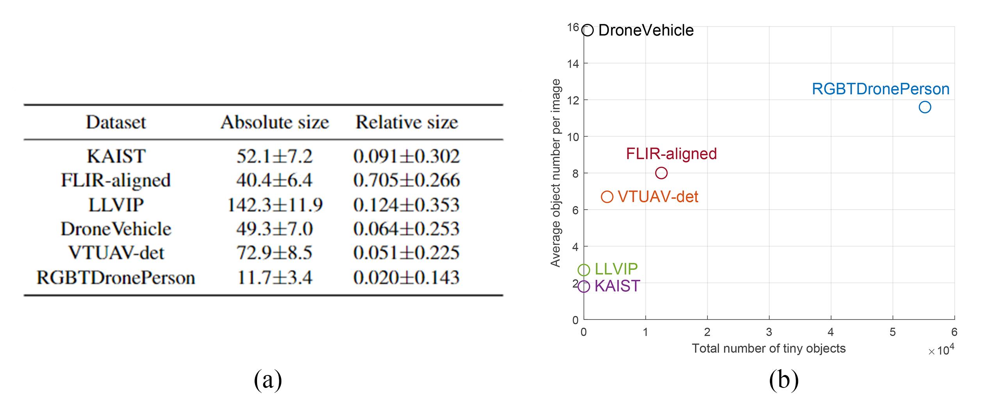
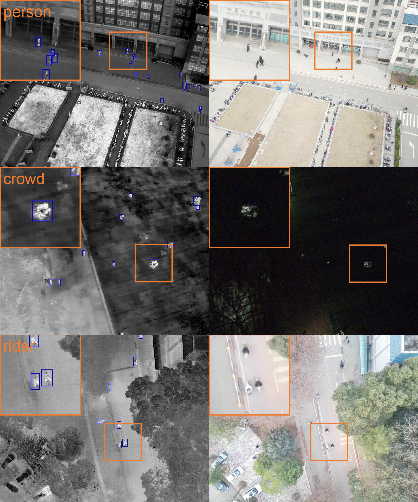
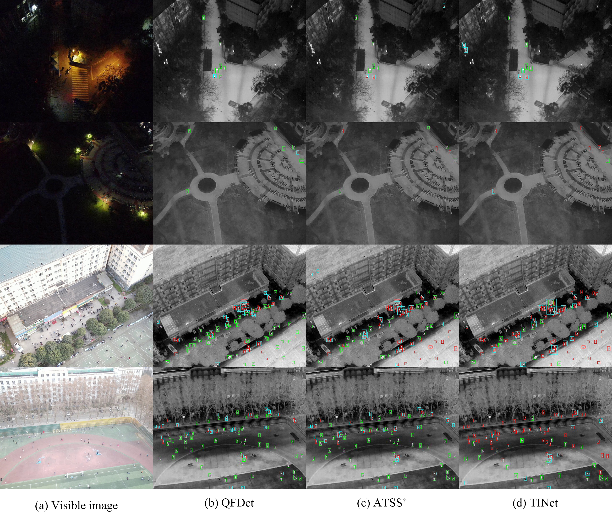
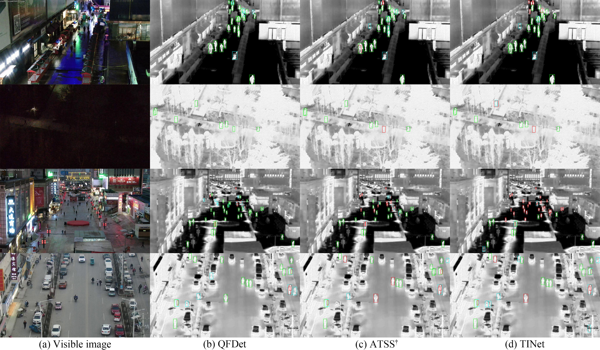

Drone-based RGBT Tiny Person Detection
Yan Zhang,
Chang Xu,
Wen Yang,
Guangjun He,
Huai Yu,
Lei Yu,
Gui-Song Xia,
School of Electronic Information, Wuhan University, Wuhan, China
The State Key Laboratory of Space-Ground Integrated Information Technology, Beijing, China
School of Computer Science and the State Key Lab. LIESMARS, Wuhan University, Wuhan, China
[Paper]
[Code and Model]
Abstract
RGBT person detection benefits numerous vital applications like surveillance, search, and rescue.
Meanwhile, drones can capture images holding broad perspectives and large searching regions per
frame, which can notably improve the efficacy of large-scale search and rescue missions. In this work,
we leverage the advantages of drone-based vision for RGBT person detection. The drone-based RGBT
person detection task brings interesting challenges to existing cross-modality object detectors, e.g.,
tiny sizes of objects, modality-space imbalance, and position shifts. Observing that there is a lack
of data and customized detectors for drone-based RGBT person detection, we contribute two new
datasets and design a novel detector. The data contribution is two-fold. For one, we construct the first
large-scale drone-based RGBT person detection benchmark RGBTDronePerson, which contains 6,125
pairs of RGBT images and 70,880 instances. Images are captured in various scenes and under various
illumination and weather conditions. For another, we annotate the VTUAV tracking dataset and obtain
its object detection version, named VTUAV-det. To tackle the challenges raised by this task, we propose
a Quality-aware RGBT Fusion Detector (QFDet). Firstly, we design a Quality-aware Learning Strategy
(QLS) to provide sufficient supervision for tiny objects while focusing on high-quality samples, in
which a Quality-Aware Factor (QAF) is designed to measure the quality. Moreover, a Quality-aware
Cross-modality Enhancement module (QCE) is proposed to predict a QAF map for each modality,
which not only indicates the reliability of each modality but also highlights regions where objects are
more likely to appear. Our QFDet remarkably boosts the detection performance over tiny and small
objects, surpassing the strong baseline on mAP by 6.57 points
on RGBTDronePerson and mAP by 3.80 points on VTUAV-det.
Introduction
Person detection is a crucial technology with wide applications in security, surveillance, crowd control,
and search & rescue. Person detection has achieved significant progress in the deep learning era. In particular,
the recently emerging multispectral person detection techniques make up for many scenarios that fail to be
tackled by RGB-based techniques. For example, the introduction of thermal modality alleviates the problem of
poor performance under severe illumination conditions in RGB-based methods. Simultaneously leveraging RGB and
Thermal (RGBT) images for person detection integrates the complementary advantages of both modalities. The
drone-based images capture scenes at a long distance and provide a bird's eye view in a broad range. Drones thus
possess the merit of spatial flexibility. RGBT data, as discussed above, provides around-the-clock useful
information and possesses the merit of time flexibility. Therefore, the combination of RGBT data and drone-based
images creates time-spatial flexibility, which is desperately needed in search & rescue. Unfortunately, there is
no drone-based RGBT person detection benchmark currently, hindering the related research and applications. To
this end, this paper proposes a large-scale drone-based RGBT person detection benchmark, coming with two datasets.
The first dataset is newly collected by drone-based RGBT cameras from various scenarios, named ''RGBTDronePerson'',
which contains 6,125 pairs of RGBT images and 70,880 instances. The second dataset is based on the large-scale
visible-thermal UAV tracking benchmark, VTUAV [1], we re-annotate it and obtain its detection version called
''VTUAV-det'', containing a total of 11,392 pairs of training images and 5,378 pairs of testing images. Examples
of RGBTDronePerson and VTUAV-det data are shown in Figure 1.
The drone-based RGBT person detection task comprises 3 notable challenges, tiny object sizes, modality-space imbalance,
and prominent position shifts, as shown in Figure 2.

Figure 1. Examples of drone-based person detection data.
RGBTDronePerson and VTUAV-det are two datasets collected
in this paper. Icons represent different challenges: ''T'' denotes
tiny object; ''TI'' denotes thermal imbalance; ''I'' denotes
illumination imbalance; ''S'' denotes position shift.
|

Figure 2. Challenges put forward by RGBTDronePerson. (a) The object size distribution shows that the majority
of RGBTDronePerson consists of tiny objects (sizes smaller than 20). (b) The image quality for person detection
varies along the reference line. The quality curves are drawn intuitively for a straightforward demonstration.
In the upper left thermal image, the ground on the right side absorbs heat, reaching similar thermal radiation
with human objects. Therefore, persons are concealed in this area. In the bottom right visible image, persons
are invisible in the dark area. (c) The bounding boxes of thermal images shift away from objects in visible images.
|
|
To tackle these problems, especially the challenging tiny object detection and modality-space imbalance issues, we
design a novel Quality-aware RGBT Fusion Detector (QFDet).
In summary, the contributions of this paper are listed as follows:
- We construct a large-scale drone-based RGBT person detection benchmark RGBTDronePerson, which is the
first to qualify spatial-time flexibility needed in search & rescue. The benchmark poses great
challenges to existing algorithms. Additionally, we also build another drone-based RGBT person detection
dataset VTUAV-det by labeling the VTUAV tracking dataset.
- We propose a Quality-aware RGBT Fusion Detector (QFDet), which comprises QLS and QCE. QLS simultaneously
leverages localization & classification and combines the strengths of prior & posterior knowledge,
obtaining high-quality samples. QCE achieves complementary fusion by accessing cross-modality quality in
a prediction-guided way.
- Extensive experiments on RGBTDronePerson and VTUAV-det datasets are conducted to validate the
effectiveness of the proposed method. Our QFDet remarkably boosts the detection performance over tiny and small
objects, surpassing the strong baseline on mAP by 6.57 points
on RGBTDronePerson and mAP by 3.80 points on VTUAV-det.
|
RGBTDronePerson
|
Statistics
|

Figure 3. Comparison between other multispectral object detection datasets. (a) Absolute and relative size comparison. (b) Number of
tiny objects comparison.
|

Figure 4. Instance examples. In the training set, there are 43,006 instances of ''person'', 4,869 instances of ''rider'', and 7,316
instances of ''crowd''.
|
Download
1. RGBTDronePerson [images and annotations]
2. VTUAV-det *
[sequences number, images, and annotations]
* Image copyright ownership belongs to School of Information and Communication Engineering, Dalian University of Technology.
|
Experimental Results
|
A Comparison of Different Methods on RGBTDronePerson
|

Figure 5. Visualized detections on RGBTDronePerson comparing with state-of-the-art methods. Green boxes denote true
positives, blue boxes denote false positives, and red boxes denote false negatives.
|
A Comparison of Different Methods on VTUAV-det
|

Figure 6. Visualized detections on VTUAV-det comparing with state-of-the-art methods. Green boxes denote true positives,
blue boxes denote false positives, and red boxes denote false negatives.
|
Acknowledgements
We would like to thank Haoran Zhu, Zijuan Chen, Yida Pan, Ziming Gui, Qinghua Yang, Yiyang Huang, Yanyin Guo,
Xianping Wang, and Ruonan Zhang for their hard work in labeling. The numerical calculations were conducted on
the supercomputing system in the Supercomputing Center, Wuhan University. The research was partially supported
by the National Natural Science Foundation of China (NSFC) under Grants 62271355.
|
Reference
[1] Zhang, Pengyu, et al. "Visible-thermal UAV tracking: A large-scale benchmark and new baseline." Proceedings of the IEEE/CVF Conference on Computer Vision and Pattern Recognition. 2022.
|
Citation
Zhang, Yan, et al. "Drone-based RGBT tiny person detection." ISPRS Journal of Photogrammetry and Remote Sensing 204 (2023): 61-76.
|